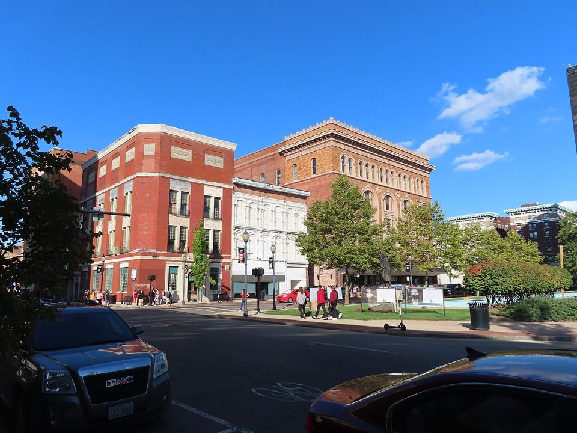
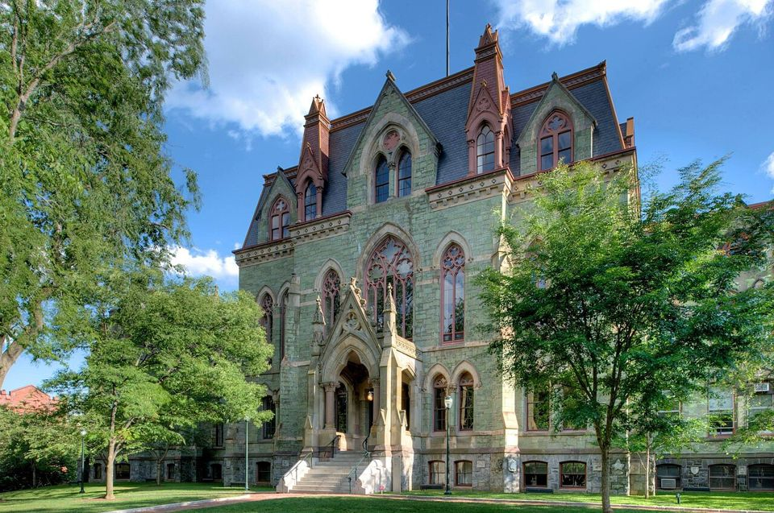
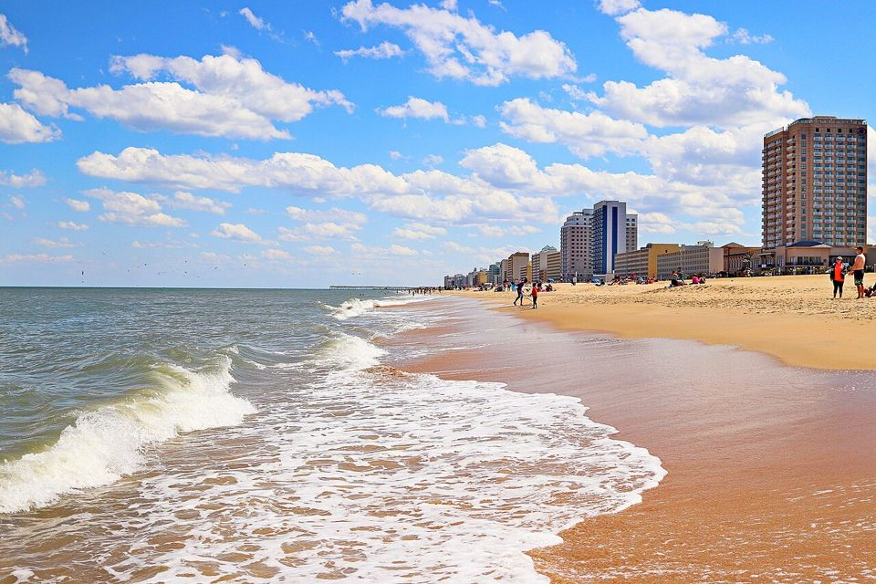
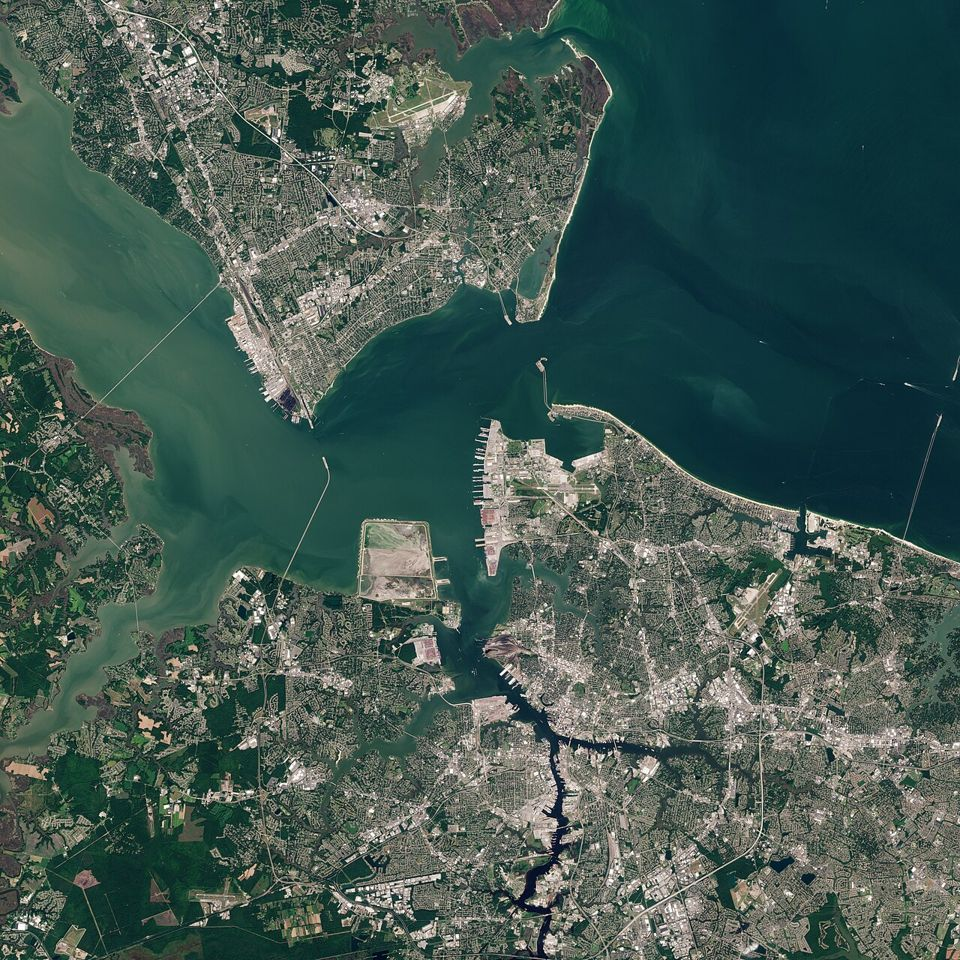
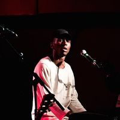
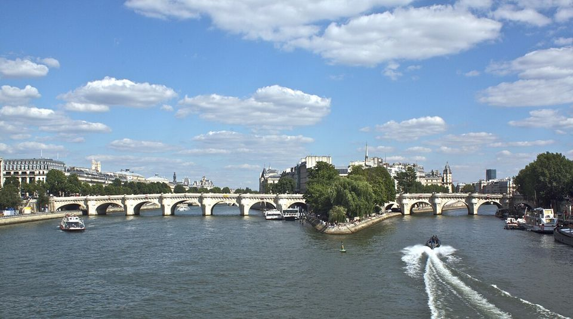

I Springfield Home, church and the choir loft
01 1978
Springfield, Ohio
Where it starts

Photo: David Wilson , CC BY 2.0 John Roger Stephens is born in Springfield on December 28, 1978. His father works at the International Harvester plant and plays drums; John is at the piano by age four.
Source Wikipedia: John Legend
02 Age 7
Springfield, Ohio
The choir loft
His mother sings and directs the church choir, his grandmother plays the organ, and at seven John is singing with the choir himself.
“Our ancestors are our muses. My music has always been me channeling the ancestors.”
John Legend, on the album Source Wikipedia: John Legend Roc Nation: Muse bio
II The road east Penn, the weekend church gig, Lauryn, New York
03 Age 16
University of Pennsylvania, Philadelphia
Penn at sixteen

Photo: Bestbudbrian , CC BY-SA 4.0 Salutatorian at Springfield North, he enrolls at Penn at 16 and becomes president and musical director of the a cappella group the Counterparts.
Source Wikipedia: John Legend
04 Late 1990s
Scranton, Pennsylvania
The weekend church gig
Photo: Ajay Suresh from New York, NY, USA , CC BY 2.0 To pay his way through school he plays piano at a church in Scranton every weekend. A choir member there knows Lauryn Hill from high school.
Source Billboard Roc Nation: Muse bio
05 1998
New Jersey
Lauryn Hill
Photo: Tore Sætre , CC BY-SA 4.0 That choir member brings him to Jersey to meet Lauryn Hill. She hires the Penn student to play piano on Everything Is Everything.
Source Billboard Wikipedia: John Legend
06 After Penn
New York City
The city
Photo: Dllu , CC BY-SA 4.0 After Penn he works as a management consultant while writing and recording his own music, and sells his first two records at his own shows.
“The hip hop that I used to party to when I was in college and when I first moved to New York.”
John Legend, Elvis Duran Show, Oct 2026 Source Wikipedia: John Legend Elvis Duran Show
07 2014
Selma, Alabama
Glory
Photo: Carol M. Highsmith , Public domain He writes Glory with Common for the film Selma. It wins the Golden Globe and the Oscar, performed on a set of the Edmund Pettus Bridge.
Source Wikipedia: Glory
III The people in the credits Where the Muse collaborators come from
08 1992
Virginia Beach, Virginia
The Neptunes

Photo: DanRVA , CC BY-SA 4.0 Pharrell and Chad Hugo meet at a summer band camp and form The Neptunes in 1992. Clipse, the brothers on Bodies On The Floor, come up beside them.
Source Wikipedia: Pharrell Williams Wikipedia: Let God Sort Em Out
09 Age 9
Chattanooga, Tennessee
Another choir kid
Photo: US Embassy Italy , Public domain Usher, also born in 1978, joins his church youth choir in Chattanooga at nine, directed by his mother. On Muse he sings background on Pray For Ya.
Source Wikipedia: Usher Apple Music: Pray For Ya
10 1991
Atlanta, Georgia
Kawan Prather
Photo: AtlChampion , CC BY-SA 4.0 Kawan “KP” Prather starts in 1991 as DJ for Parental Advisory, part of the Dungeon Family, then works A&R at LaFace. He was A&R on John’s Evolver in 2008 and co-writes five Muse songs.
Source Wikipedia: Kawan Prather Wikipedia: Evolver Apple Music: Muse credits
11 2020
Hampton Roads, Virginia
Voices of Fire

Photo: Copernicus Sentinel-2, ESA , CC BY-SA 3.0 igo Pharrell and his uncle, Bishop Ezekiel Williams, search his home region for gospel voices. The choir they build sings on Fireflies.
Source Wikipedia: Voices of Fire Apple Music: Fireflies
12 Daylight
London
Samm Henshaw

Photo: Wikieditor243 , CC BY-SA 4.0 Samm Henshaw, raised in South London by Nigerian parents, writes Daylight with Pharrell, the song that started Muse. He has writing credits on six Muse songs.
Source Wikipedia: Samm Henshaw Roc Nation: Muse bio Apple Music: Daylight
13 Dec 28, 1978
Los Angeles
Terrace Martin
Photo: Ice Boy Tell , CC BY-SA 4.0 Terrace Martin, who learned his horn at Santa Monica High and Locke High and arranged the horns on Muse, was born the very same day as John.
Source Wikipedia: Terrace Martin Apple Music: Muse
IV Making Muse A 5 AM call, a home studio, a studio in Paris
14 Christmas 2024
Los Angeles
The 5 AM call
Photo: PhilipRomanoPhoto , CC BY-SA 4.0 Pharrell calls from Paris before dawn, LA time: what are you doing for your next album? He sends Daylight, and John cuts it at home around Christmas.
“If this is what the album can sound like, then we are really in for something.”
John Legend, on hearing Daylight Source Roc Nation: Muse bio The Breakfast Club
15 2025
Paris
The studio at Louis Vuitton

Photo: Rmrfstar , CC BY-SA 3.0 Muse comes together in Pharrell’s studio inside Louis Vuitton’s Paris headquarters, with a view of the Seine, then over Zoom and more trips.
Source Roc Nation: Muse bio The Breakfast Club
16 2026
Paris
First taste, on the runway
Photo: Web Summit/Ramsey Cardy/Sportsfile , CC BY 2.0 The world first hears Muse at a fashion show: Pray For Ya soundtracks Louis Vuitton’s Fall Winter 2026 men’s show.
Source Roc Nation: Muse bio
Everywhere
Muse
October 23, 2026
Sixteen songs, produced in full by Pharrell. Play the album beside every record that shaped it.
Play The Roots of Muse